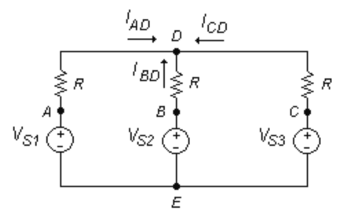
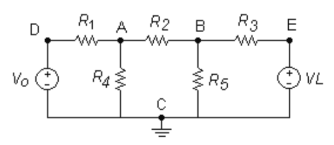
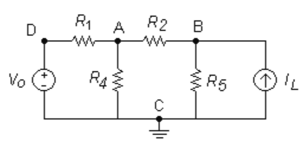
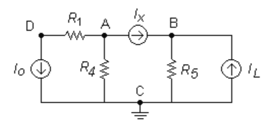

1. Llei d'Ohm
2. Llei d'Ohm i Potència
3. Serie i Paral·lel
4. Circuits serie i paral·lel
5. Circuits en escalera
6. KVL - Malles
7. KCL - Nodes
1. Llei d'Ohm
2. Llei d'Ohm i Potència
3. Serie i Paral·lel
4. Circuits serie i paral·lel
5. Circuits en escalera
6. KVL - Malles
7. KCL - Nodes
8. Superposició
9. Thèvenin
10. Norton
11. Tranformació de fonts
1) Quant val el voltatge al punt D?

2) R1=5k, R2=R3=1k; R3=R4=2k; R5=3k; Vo=15V; VL=5V
Troba Va, Vb, Vc, Vd i Ve.

3) Vo=5V; R1=5k; R4=3k; R2=1k; R5=1k; IL=0,02 A
Troba Va, Vb, Vc i Vd.

4) Io=-5A; R1=5; R4=3; R5=1; Ix=2A; IL=1A
Troba Va, Vb, Vc i Vd.
